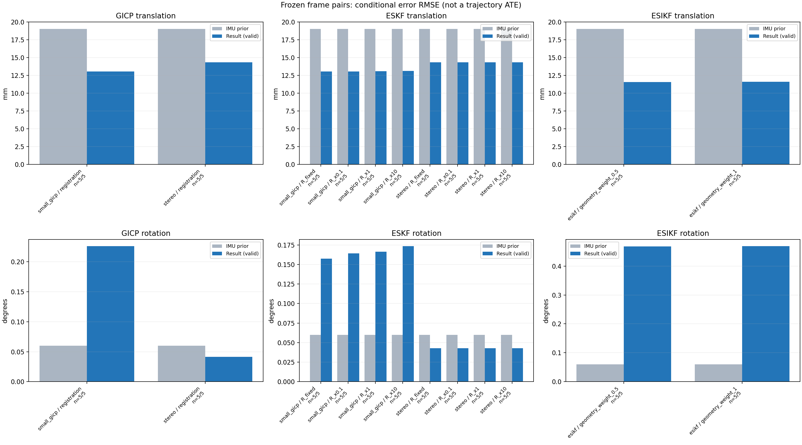

20261015_112940_pitch_up · depth=sgbm · cache=8c52ac445e406895b778
配准代码版本：744ac2d993ae629b0cc44a3b1d995e04ab4fad48；观测生成版本：744ac2d993ae629b0cc44a3b1d995e04ab4fad48。
固定图像对与纯 IMU 先验；ESKF 回放固定 GICP 观测，ESIKF 直接读取点云。真值只用于此报告。
同时查看 converged 与 solver_status：上游默认 Stereo 在 max_iter / stopped_at_minimum 时也可能置 converged=true。valid 表示输入检查通过，不表示精度提升。欧氏 GICP 未提供独立的点距 RMSE，该列显示 NaN。
SGBM 调试基线：结果用于检查接口、坐标与融合行为，模型视差替换后需重新评估 GICP 精度和协方差。
误差按每对图像的锚点计算，单位 m / degrees。此处 RMSE 不是全序列 ATE；末帧受同一锚点条件约束。NIS 与条件马氏距离是诊断量，少量相关图像对不能用于宣称协方差已校准。
全部指标 CSV · R / P / K 矩阵 CSV · Stereo 求解逐轮 CSV · ESIKF 逐轮 CSV · 配置快照 · 矢量图
| stage | method | variant | valid | total | translation RMSE (m) | rotation RMSE (deg) |
|---|---|---|---|---|---|---|
| esikf | esikf | geometry_weight_0.5 | 5 | 5 | 0.011548 | 0.4681 |
| esikf | esikf | geometry_weight_1 | 5 | 5 | 0.011593 | 0.46854 |
| eskf | small_gicp | R_fixed | 5 | 5 | 0.013037 | 0.1576 |
| eskf | small_gicp | R_x0.1 | 5 | 5 | 0.013063 | 0.16436 |
| eskf | small_gicp | R_x1 | 5 | 5 | 0.013082 | 0.16633 |
| eskf | small_gicp | R_x10 | 5 | 5 | 0.013129 | 0.17333 |
| eskf | stereo | R_fixed | 5 | 5 | 0.014348 | 0.042683 |
| eskf | stereo | R_x0.1 | 5 | 5 | 0.014348 | 0.042732 |
| eskf | stereo | R_x1 | 5 | 5 | 0.014348 | 0.042732 |
| eskf | stereo | R_x10 | 5 | 5 | 0.014348 | 0.042732 |
| gicp | small_gicp | registration | 5 | 5 | 0.013061 | 0.22592 |
| gicp | stereo | registration | 5 | 5 | 0.014344 | 0.041533 |

| stage | case | method | variant | status | solver_status | inliers | converged | covariance_convention | covariance_from_hessian | fitness | registration_rmse_m | prior_trans_error_m | result_trans_error_m | prior_rot_error_deg | result_rot_error_deg | R_rot_trace_rad2 | R_pos_trace_m2 | nis_regularized |
|---|---|---|---|---|---|---|---|---|---|---|---|---|---|---|---|---|---|---|
| gicp | static_start | small_gicp | registration | eligible | 7528 | 1 | right_source_body | 1 | 0.87494 | nan | 0.00012006 | 0.0078735 | 0.0069246 | 0.17293 | 4.3934e-05 | 0.0001581 | nan | |
| gicp | static_start | stereo | registration | eligible | max_iter | 3832 | 1 | left_target_body | 1 | 0.44605 | 0.10964 | 0.00012006 | 0.0013845 | 0.0069246 | 0.022115 | 4.4593e-08 | 2.0204e-07 | nan |
| gicp | sync_motion | small_gicp | registration | eligible | 7833 | 1 | right_source_body | 1 | 0.86591 | nan | 0.00096706 | 0.0078834 | 0.039675 | 0.25754 | 4.5533e-05 | 0.00017275 | nan | |
| gicp | sync_motion | stereo | registration | eligible | max_iter | 3913 | 1 | left_target_body | 1 | 0.43357 | 0.11944 | 0.00096706 | 0.0015582 | 0.039675 | 0.030517 | 3.9913e-08 | 1.968e-07 | nan |
| gicp | main_motion | small_gicp | registration | eligible | 15753 | 1 | right_source_body | 1 | 0.68233 | nan | 0.0064081 | 0.019463 | 0.02833 | 0.18313 | 5.2414e-06 | 8.1765e-05 | nan | |
| gicp | main_motion | stereo | registration | eligible | max_iter | 14051 | 1 | left_target_body | 1 | 0.60651 | 0.46044 | 0.0064081 | 0.0037964 | 0.02833 | 0.023328 | 5.0012e-09 | 1.1126e-07 | nan |
| gicp | main_motion_long | small_gicp | registration | eligible | 12576 | 1 | right_source_body | 1 | 0.49958 | nan | 0.038923 | 0.018019 | 0.12422 | 0.33801 | 7.553e-06 | 0.00011107 | nan | |
| gicp | main_motion_long | stereo | registration | eligible | max_iter | 11798 | 1 | left_target_body | 1 | 0.46853 | 0.4785 | 0.038923 | 0.028162 | 0.12422 | 0.07819 | 6.6678e-09 | 1.5648e-07 | nan |
| gicp | static_end | small_gicp | registration | eligible | 18529 | 1 | right_source_body | 1 | 0.77866 | nan | 0.01604 | 0.0050357 | 0.0024326 | 0.1057 | 3.7766e-06 | 6.4024e-05 | nan | |
| gicp | static_end | stereo | registration | eligible | max_iter | 16284 | 1 | left_target_body | 1 | 0.68412 | 0.38363 | 0.01604 | 0.014725 | 0.0024326 | 0.023377 | 5.2649e-09 | 8.5202e-08 | nan |
| eskf | static_start | small_gicp | R_x0.1 | updated | 7528 | 1 | right_source_body | 1 | 0.87494 | nan | 0.00012006 | 0.0078709 | 0.0069246 | 0.17275 | 4.3934e-06 | 1.581e-05 | 0.0065681 | |
| eskf | static_start | small_gicp | R_x1 | updated | 7528 | 1 | right_source_body | 1 | 0.87494 | nan | 0.00012006 | 0.0078512 | 0.0069246 | 0.17175 | 4.3934e-05 | 0.0001581 | 0.006528 | |
| eskf | static_start | small_gicp | R_x10 | updated | 7528 | 1 | right_source_body | 1 | 0.87494 | nan | 0.00012006 | 0.0076613 | 0.0069246 | 0.16249 | 0.00043934 | 0.001581 | 0.0061579 | |
| eskf | static_start | small_gicp | R_fixed | updated | 7528 | 1 | right_source_body | 1 | 0.87494 | nan | 0.00012006 | 0.0077234 | 0.0069246 | 0.16821 | 0.00022846 | 0.0012 | 0.006261 | |
| eskf | static_start | stereo | R_x0.1 | updated | max_iter | 3832 | 1 | left_target_body | 1 | 0.44605 | 0.10964 | 0.00012006 | 0.0013844 | 0.0069246 | 0.02211 | 4.4593e-09 | 2.0204e-08 | 0.00019255 |
| eskf | static_start | stereo | R_x1 | updated | max_iter | 3832 | 1 | left_target_body | 1 | 0.44605 | 0.10964 | 0.00012006 | 0.0013844 | 0.0069246 | 0.02211 | 4.4593e-08 | 2.0204e-07 | 0.00019255 |
| eskf | static_start | stereo | R_x10 | updated | max_iter | 3832 | 1 | left_target_body | 1 | 0.44605 | 0.10964 | 0.00012006 | 0.0013843 | 0.0069246 | 0.022108 | 4.4593e-07 | 2.0204e-06 | 0.00019254 |
| eskf | static_start | stereo | R_fixed | updated | max_iter | 3832 | 1 | left_target_body | 1 | 0.44605 | 0.10964 | 0.00012006 | 0.0013468 | 0.0069246 | 0.021662 | 0.00022846 | 0.0012 | 0.00018703 |
| eskf | sync_motion | small_gicp | R_x0.1 | updated | 7833 | 1 | right_source_body | 1 | 0.86591 | nan | 0.00096706 | 0.0079029 | 0.039675 | 0.24626 | 4.5533e-06 | 1.7275e-05 | 0.08729 | |
| eskf | sync_motion | small_gicp | R_x1 | updated | 7833 | 1 | right_source_body | 1 | 0.86591 | nan | 0.00096706 | 0.0080715 | 0.039675 | 0.25354 | 4.5533e-05 | 0.00017275 | 0.069841 | |
| eskf | sync_motion | small_gicp | R_x10 | updated | 7833 | 1 | right_source_body | 1 | 0.86591 | nan | 0.00096706 | 0.008563 | 0.039675 | 0.28233 | 0.00045533 | 0.0017275 | 0.024212 | |
| eskf | sync_motion | small_gicp | R_fixed | updated | 7833 | 1 | right_source_body | 1 | 0.86591 | nan | 0.00096706 | 0.0078296 | 0.039675 | 0.22797 | 0.00022846 | 0.0012 | 0.040813 | |
| eskf | sync_motion | stereo | R_x0.1 | updated | max_iter | 3913 | 1 | left_target_body | 1 | 0.43357 | 0.11944 | 0.00096706 | 0.0015584 | 0.039675 | 0.030287 | 3.9913e-09 | 1.968e-08 | 4.9711e-05 |
| eskf | sync_motion | stereo | R_x1 | updated | max_iter | 3913 | 1 | left_target_body | 1 | 0.43357 | 0.11944 | 0.00096706 | 0.0015583 | 0.039675 | 0.030287 | 3.9913e-08 | 1.968e-07 | 4.9699e-05 |
| eskf | sync_motion | stereo | R_x10 | updated | max_iter | 3913 | 1 | left_target_body | 1 | 0.43357 | 0.11944 | 0.00096706 | 0.0015582 | 0.039675 | 0.030289 | 3.9913e-07 | 1.968e-06 | 4.9583e-05 |
| eskf | sync_motion | stereo | R_fixed | updated | max_iter | 3913 | 1 | left_target_body | 1 | 0.43357 | 0.11944 | 0.00096706 | 0.0015591 | 0.039675 | 0.029852 | 0.00022846 | 0.0012 | 2.5442e-05 |
| eskf | main_motion | small_gicp | R_x0.1 | updated | 15753 | 1 | right_source_body | 1 | 0.68233 | nan | 0.0064081 | 0.019461 | 0.02833 | 0.14366 | 5.2414e-07 | 8.1765e-06 | 0.0013272 | |
| eskf | main_motion | small_gicp | R_x1 | updated | 15753 | 1 | right_source_body | 1 | 0.68233 | nan | 0.0064081 | 0.019461 | 0.02833 | 0.14363 | 5.2414e-06 | 8.1765e-05 | 0.0013265 | |
| eskf | main_motion | small_gicp | R_x10 | updated | 15753 | 1 | right_source_body | 1 | 0.68233 | nan | 0.0064081 | 0.019461 | 0.02833 | 0.14335 | 5.2414e-05 | 0.00081765 | 0.0013197 | |
| eskf | main_motion | small_gicp | R_fixed | updated | 15753 | 1 | right_source_body | 1 | 0.68233 | nan | 0.0064081 | 0.019461 | 0.02833 | 0.14281 | 0.00022846 | 0.0012 | 0.0013025 | |
| eskf | main_motion | stereo | R_x0.1 | updated | max_iter | 14051 | 1 | left_target_body | 1 | 0.60651 | 0.46044 | 0.0064081 | 0.0037988 | 0.02833 | 0.02041 | 5.0012e-10 | 1.1126e-08 | 2.0245e-05 |
| eskf | main_motion | stereo | R_x1 | updated | max_iter | 14051 | 1 | left_target_body | 1 | 0.60651 | 0.46044 | 0.0064081 | 0.0037988 | 0.02833 | 0.02041 | 5.0012e-09 | 1.1126e-07 | 2.0245e-05 |
| eskf | main_motion | stereo | R_x10 | updated | max_iter | 14051 | 1 | left_target_body | 1 | 0.60651 | 0.46044 | 0.0064081 | 0.0037988 | 0.02833 | 0.02041 | 5.0012e-08 | 1.1126e-06 | 2.0245e-05 |
| eskf | main_motion | stereo | R_fixed | updated | max_iter | 14051 | 1 | left_target_body | 1 | 0.60651 | 0.46044 | 0.0064081 | 0.0037994 | 0.02833 | 0.020375 | 0.00022846 | 0.0012 | 2.0154e-05 |
| eskf | main_motion_long | small_gicp | R_x0.1 | updated | 12576 | 1 | right_source_body | 1 | 0.49958 | nan | 0.038923 | 0.018023 | 0.12422 | 0.15392 | 7.553e-07 | 1.1107e-05 | 0.015063 | |
| eskf | main_motion_long | small_gicp | R_x1 | updated | 12576 | 1 | right_source_body | 1 | 0.49958 | nan | 0.038923 | 0.018025 | 0.12422 | 0.1538 | 7.553e-06 | 0.00011107 | 0.015047 | |
| eskf | main_motion_long | small_gicp | R_x10 | updated | 12576 | 1 | right_source_body | 1 | 0.49958 | nan | 0.038923 | 0.018051 | 0.12422 | 0.15263 | 7.553e-05 | 0.0011107 | 0.014891 | |
| eskf | main_motion_long | small_gicp | R_fixed | updated | 12576 | 1 | right_source_body | 1 | 0.49958 | nan | 0.038923 | 0.018024 | 0.12422 | 0.15257 | 0.00022846 | 0.0012 | 0.014671 | |
| eskf | main_motion_long | stereo | R_x0.1 | updated | max_iter | 11798 | 1 | left_target_body | 1 | 0.46853 | 0.4785 | 0.038923 | 0.028174 | 0.12422 | 0.08544 | 6.6678e-10 | 1.5648e-08 | 0.0001228 |
| eskf | main_motion_long | stereo | R_x1 | updated | max_iter | 11798 | 1 | left_target_body | 1 | 0.46853 | 0.4785 | 0.038923 | 0.028174 | 0.12422 | 0.08544 | 6.6678e-09 | 1.5648e-07 | 0.0001228 |
| eskf | main_motion_long | stereo | R_x10 | updated | max_iter | 11798 | 1 | left_target_body | 1 | 0.46853 | 0.4785 | 0.038923 | 0.028174 | 0.12422 | 0.08544 | 6.6678e-08 | 1.5648e-06 | 0.0001228 |
| eskf | main_motion_long | stereo | R_fixed | updated | max_iter | 11798 | 1 | left_target_body | 1 | 0.46853 | 0.4785 | 0.038923 | 0.028177 | 0.12422 | 0.085593 | 0.00022846 | 0.0012 | 0.00012244 |
| eskf | static_end | small_gicp | R_x0.1 | updated | 18529 | 1 | right_source_body | 1 | 0.77866 | nan | 0.01604 | 0.0050268 | 0.0024326 | 0.016123 | 3.7766e-07 | 6.4024e-06 | 1.7572e-05 | |
| eskf | static_end | small_gicp | R_x1 | updated | 18529 | 1 | right_source_body | 1 | 0.77866 | nan | 0.01604 | 0.0050268 | 0.0024326 | 0.016123 | 3.7766e-06 | 6.4024e-05 | 1.7572e-05 | |
| eskf | static_end | small_gicp | R_x10 | updated | 18529 | 1 | right_source_body | 1 | 0.77866 | nan | 0.01604 | 0.0050268 | 0.0024326 | 0.016122 | 3.7766e-05 | 0.00064024 | 1.7571e-05 | |
| eskf | static_end | small_gicp | R_fixed | updated | 18529 | 1 | right_source_body | 1 | 0.77866 | nan | 0.01604 | 0.0050268 | 0.0024326 | 0.016118 | 0.00022846 | 0.0012 | 1.7566e-05 | |
| eskf | static_end | stereo | R_x0.1 | updated | max_iter | 16284 | 1 | left_target_body | 1 | 0.68412 | 0.38363 | 0.01604 | 0.014722 | 0.0024326 | 0.002731 | 5.2649e-10 | 8.5202e-09 | 2.2631e-06 |
| eskf | static_end | stereo | R_x1 | updated | max_iter | 16284 | 1 | left_target_body | 1 | 0.68412 | 0.38363 | 0.01604 | 0.014722 | 0.0024326 | 0.002731 | 5.2649e-09 | 8.5202e-08 | 2.2631e-06 |
| eskf | static_end | stereo | R_x10 | updated | max_iter | 16284 | 1 | left_target_body | 1 | 0.68412 | 0.38363 | 0.01604 | 0.014722 | 0.0024326 | 0.002731 | 5.2649e-08 | 8.5202e-07 | 2.2631e-06 |
| eskf | static_end | stereo | R_fixed | updated | max_iter | 16284 | 1 | left_target_body | 1 | 0.68412 | 0.38363 | 0.01604 | 0.014722 | 0.0024326 | 0.0027298 | 0.00022846 | 0.0012 | 2.2627e-06 |
| esikf | static_start | esikf | geometry_weight_1 | updated | 6202 | 1 | 1 | 0 | 0 | 0.00012006 | 0.0039004 | 0.0069246 | 0.52875 | 5.835e-07 | 1.1866e-06 | nan | ||
| esikf | static_start | esikf | geometry_weight_0.5 | updated | 6204 | 1 | 1 | 0 | 0 | 0.00012006 | 0.0040029 | 0.0069246 | 0.53078 | 1.166e-06 | 2.3737e-06 | nan | ||
| esikf | sync_motion | esikf | geometry_weight_1 | updated_not_converged | 6531 | 0 | 1 | 0 | 0 | 0.00096706 | 0.0052398 | 0.039675 | 0.74059 | 5.8388e-07 | 1.23e-06 | nan | ||
| esikf | sync_motion | esikf | geometry_weight_0.5 | updated_not_converged | 6539 | 0 | 1 | 0 | 0 | 0.00096706 | 0.0052227 | 0.039675 | 0.74017 | 1.1635e-06 | 2.4514e-06 | nan | ||
| esikf | main_motion | esikf | geometry_weight_1 | updated | 17956 | 1 | 1 | 0 | 0 | 0.0064081 | 0.01571 | 0.02833 | 0.27902 | 1.6681e-07 | 9.2767e-07 | nan | ||
| esikf | main_motion | esikf | geometry_weight_0.5 | updated | 17964 | 1 | 1 | 0 | 0 | 0.0064081 | 0.015728 | 0.02833 | 0.27797 | 3.3305e-07 | 1.85e-06 | nan | ||
| esikf | main_motion_long | esikf | geometry_weight_1 | updated_not_converged | 15341 | 0 | 1 | 0 | 0 | 0.038923 | 0.019369 | 0.12422 | 0.41944 | 1.2411e-07 | 1.0141e-06 | nan | ||
| esikf | main_motion_long | esikf | geometry_weight_0.5 | updated_not_converged | 15331 | 0 | 1 | 0 | 0 | 0.038923 | 0.019205 | 0.12422 | 0.41563 | 2.4777e-07 | 2.0136e-06 | nan | ||
| esikf | static_end | esikf | geometry_weight_1 | updated_not_converged | 19763 | 0 | 1 | 0 | 0 | 0.01604 | 0.0027046 | 0.0024326 | 0.12578 | 8.907e-08 | 8.6777e-07 | nan | ||
| esikf | static_end | esikf | geometry_weight_0.5 | updated_not_converged | 19762 | 0 | 1 | 0 | 0 | 0.01604 | 0.0026902 | 0.0024326 | 0.12646 | 1.7806e-07 | 1.7345e-06 | nan |